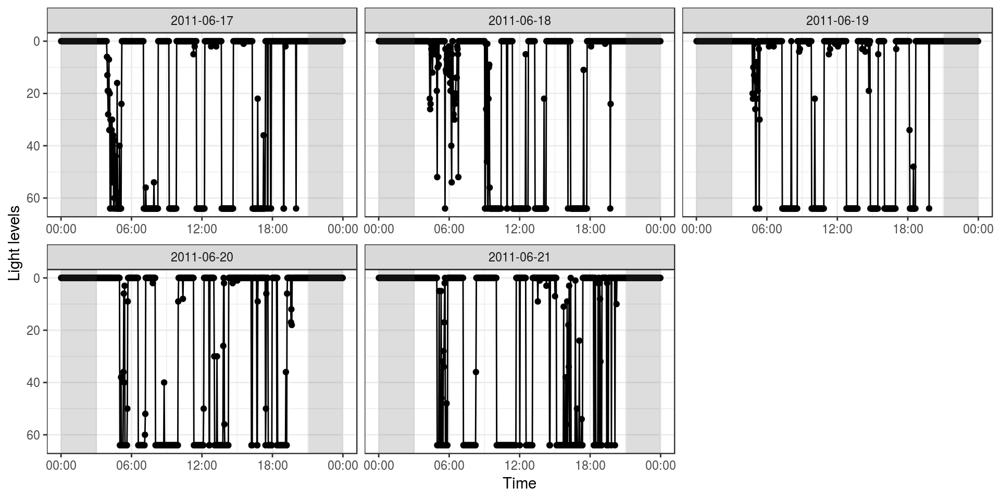
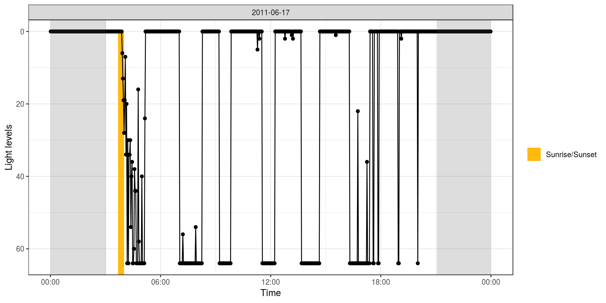
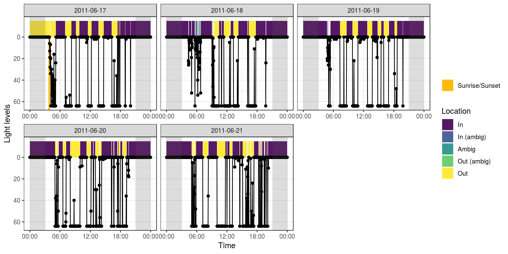

Detecting Cavity Use From Geolocator Data
cavityuse is an R package for calculating patterns of cavity use from geolocator light data. Patterns of light and dark are used to identify daytime usage, while patterns of sunrise/sunset are used to identify nighttime usage.
While
cavityuseis ready to be experimented with, it’s still in early development and should be considered experimental. Please give me a hand by letting me know of any problems you have (missing functionality, difficult to use, bugs, etc.)
Installing cavityuse
You can use the devtools package to install cavityuse directly from GitHub
devtools::install_github("steffilazerte/cavityuse")Getting started
Load the package
library(cavityuse)## cavityuse v0.1.0
## Please note that 'cavityuse' is still in early development
## Help by submitting bugs/feature requests: http://github.com/steffilazerte/cavityuse/issuesWe’ll get started with the built in example file flicker
Let’s take a look at the patterns in the raw data:
cavity_plot(flicker)
Look for any sunrise/sunset events in your geolocator data
s <- sun_detect(flicker)
s## # A tibble: 1 x 6
## date time dir n_range n dur
## <date> <dttm> <chr> <dbl> <int> <dbl>
## 1 2011-06-17 2011-06-17 03:40:50 sunrise 28 10 20Let’s see what these look like
cavity_plot(data = flicker, sun = s, start = "2011-06-17", days = 1)
Using these detected times, assign the rest of the light data to bouts of cavity use:
e <- cavity_detect(flicker, sun = s)
e## # A tibble: 213 x 9
## date start end length_hrs location
## <date> <dttm> <dttm> <dbl> <chr>
## 1 2011-06-17 2011-06-17 00:00:50 2011-06-17 03:38:50 3.63 out
## 2 2011-06-17 2011-06-17 03:40:50 2011-06-17 04:04:50 0.4 out
## 3 2011-06-17 2011-06-17 04:06:50 2011-06-17 04:06:50 0 out_amb…
## 4 2011-06-17 2011-06-17 04:08:50 2011-06-17 04:08:50 0 ambig
## 5 2011-06-17 2011-06-17 04:10:50 2011-06-17 05:06:50 0.933 out
## 6 2011-06-17 2011-06-17 05:08:50 2011-06-17 05:08:50 0 ambig
## 7 2011-06-17 2011-06-17 05:10:50 2011-06-17 07:00:50 1.83 in
## 8 2011-06-17 2011-06-17 07:02:50 2011-06-17 08:14:50 1.2 out
## 9 2011-06-17 2011-06-17 08:16:50 2011-06-17 09:10:50 0.9 in
## 10 2011-06-17 2011-06-17 09:12:50 2011-06-17 09:48:50 0.6 out
## # ... with 203 more rows, and 4 more variables: thresh_dark <dbl>,
## # thresh_light <dbl>, ambig_dark <dbl>, ambig_light <dbl>Let’s see how these assignments match the patterns we see
cavity_plot(data = flicker, cavity = e, sun = s)
With your own data
You data must be in a data frame with the columns called time and light.
-
timemust be in adate/timeformat -
lightmust be a number, representing light levels in lux (low = dark, high = light)
For example:
## # A tibble: 3,600 x 2
## time light
## <dttm> <dbl>
## 1 2011-06-17 00:00:50 0
## 2 2011-06-17 00:02:50 0
## 3 2011-06-17 00:04:50 0
## 4 2011-06-17 00:06:50 0
## 5 2011-06-17 00:08:50 0
## 6 2011-06-17 00:10:50 0
## 7 2011-06-17 00:12:50 0
## 8 2011-06-17 00:14:50 0
## 9 2011-06-17 00:16:50 0
## 10 2011-06-17 00:18:50 0
## # ... with 3,590 more rowsConsider using the lubridate package to format your times
Timezones
Although most geolocator data is in the UTC timezone, to more efficiently detect sunrise/sunset times, your data should be in the timezone of your location (non-daylight savings).
You can use the tz_offset function to determine what timezone this would be, and the with_tz function from the lubridate package to assign this timezone to your data:
tz_offset("America/Vancouver")## [1] "Etc/GMT+8"library(lubridate)
data$time <- with_tz(data$time, "Etc/GMT+8")Coordinates
cavityuse functions require coordinates in order to more efficiently detect sunrise/sunset times, but also to estimate sunrise/sunset when they are not detected in the data.
You can supply coordinates in one of two ways.
- You can have
lonandlatcolumns, indicating the decimal coordinates for your location either in your data
## # A tibble: 3,600 x 4
## time light lon lat
## <dttm> <dbl> <dbl> <dbl>
## 1 2011-06-17 00:00:50 0 -120. 50.7
## 2 2011-06-17 00:02:50 0 -120. 50.7
## 3 2011-06-17 00:04:50 0 -120. 50.7
## 4 2011-06-17 00:06:50 0 -120. 50.7
## 5 2011-06-17 00:08:50 0 -120. 50.7
## 6 2011-06-17 00:10:50 0 -120. 50.7
## 7 2011-06-17 00:12:50 0 -120. 50.7
## 8 2011-06-17 00:14:50 0 -120. 50.7
## 9 2011-06-17 00:16:50 0 -120. 50.7
## 10 2011-06-17 00:18:50 0 -120. 50.7
## # ... with 3,590 more rows- You can have a separte variable that you supply to each function (order matters, and must be
lon,lat):
sun_times(data, loc = c(-120.3408, 50.67611))Limitations
Right now, cavityuse is limited to the follow scenarios:
-
No big changes in location (i.e. No migration) Changes in location can interfere with how
cavityuseassigns activity based on sunrise/sunset times which are inferred from lon/lat (this may change in the future) -
No extreme latitudes Because of the way
cavityusedetects sunrise and sunset, extremely latitudes may result in unpredicatable behaviour (this should hopefully be fixed in the future) - Animals which use cavities at night, must normally enter their cavity before it gets dark and exit after it gets light With out the ability to detect sunrise/sunset it is impossible to determine cavityuse at night
Please note that this project is released with a Contributor Code of Conduct. By participating in this project you agree to abide by its terms.